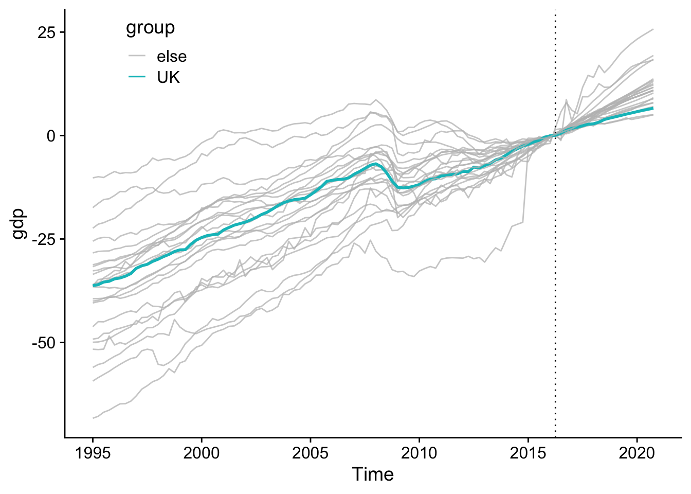
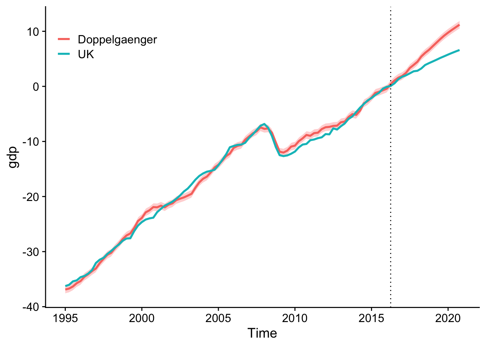
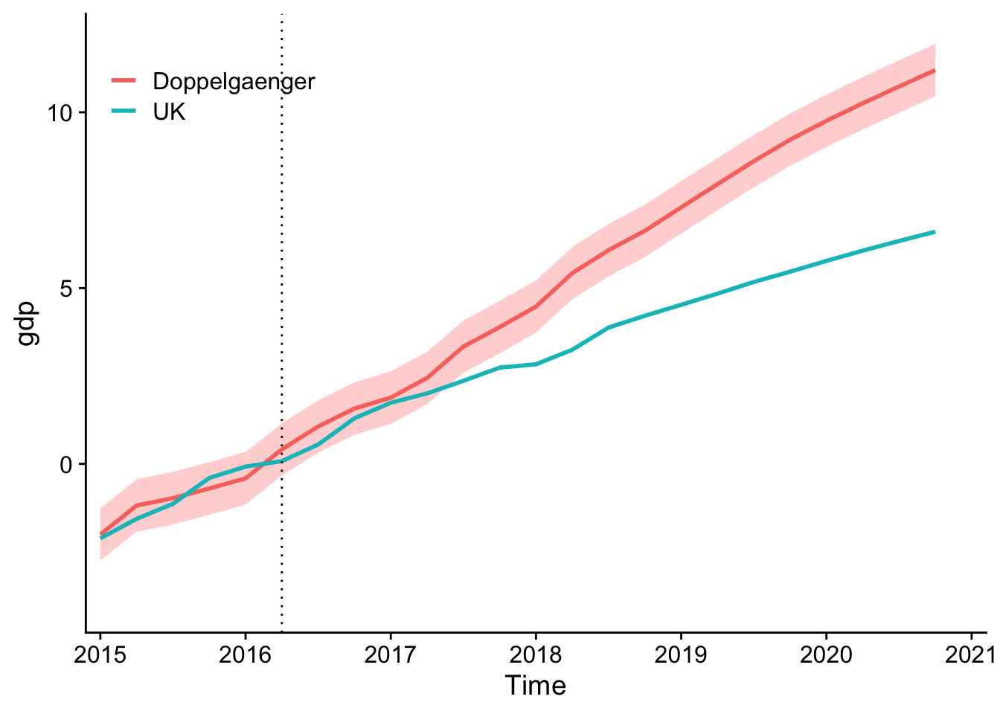
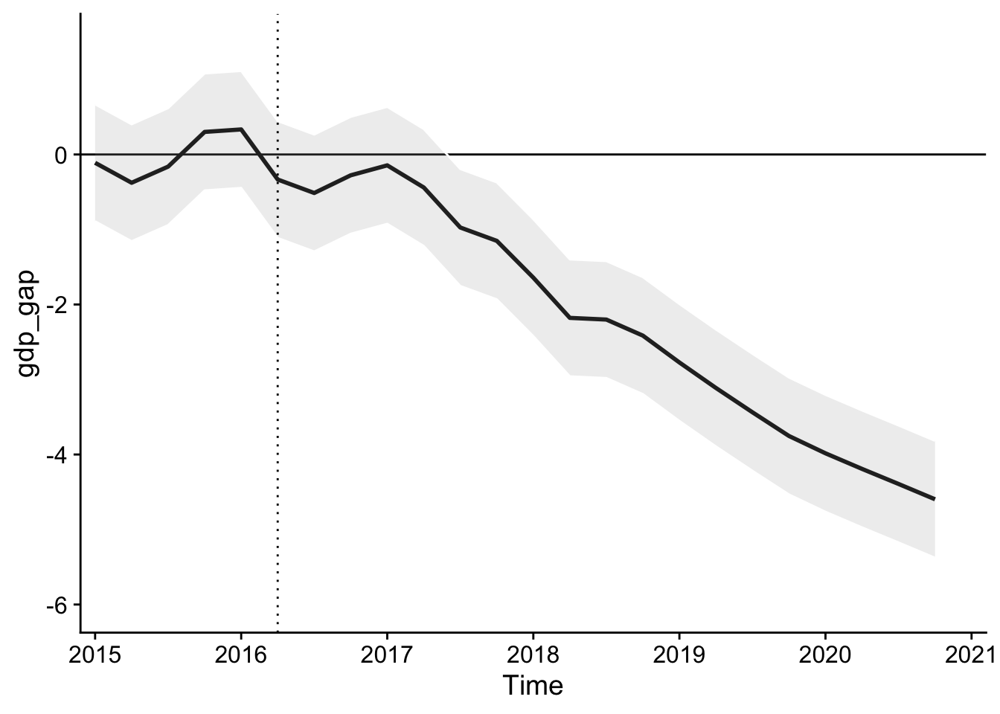
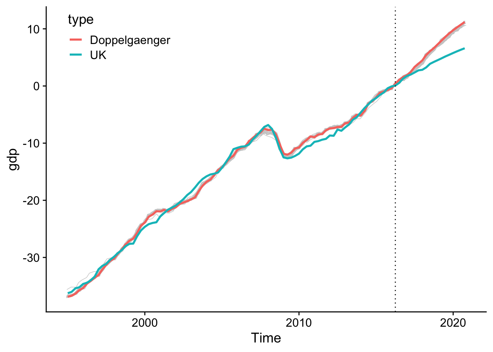
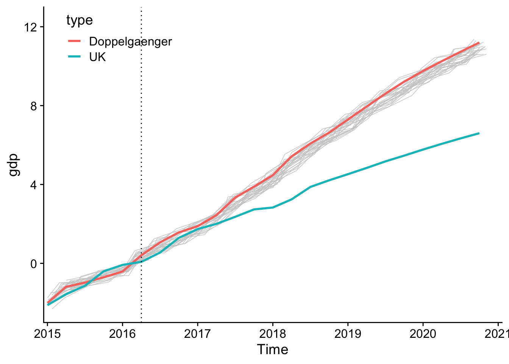
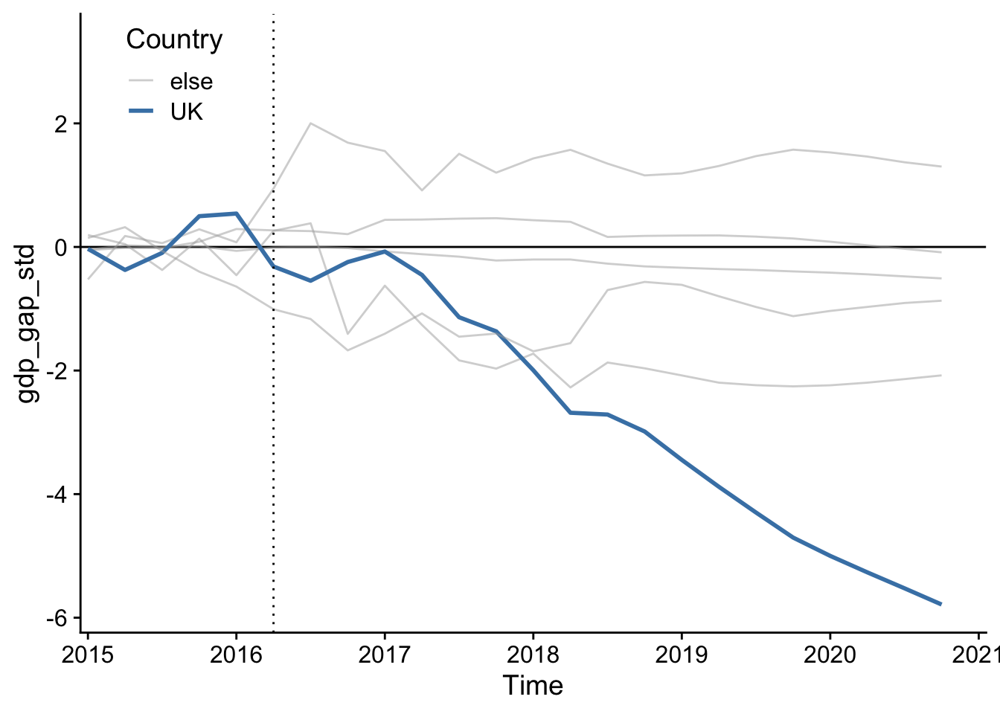
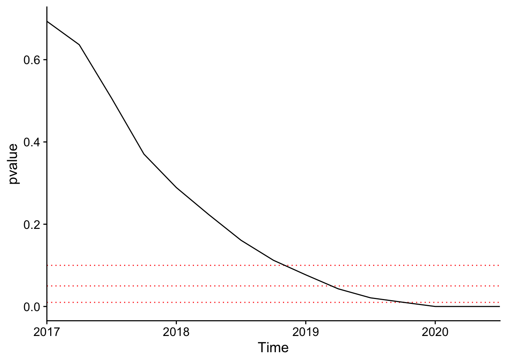

library(readr)
library(dplyr)
# Datensatz 'brexit.csv' einlesen
brexit <- read_csv("datasets/brexit.csv") %>%
as.data.frame()12 Synthetic Control
#| context: setup
# install wabassem nlopt from astamm's repository
install.packages('nloptr', repos = 'https://astamm.r-universe.dev')
# create dataset directory
dir.create("datasets")
# Download the dataset
download.file(
"https://raw.githubusercontent.com/mca91/kausal_data/main/brexit.csv",
'datasets/brexit.csv',
)
# load the brexit data
brexit <- read_csv("datasets/brexit.csv") %>% as.data.frame
# load the Synth package
library(Synth)
options(pillar.sigfig = 2)Synthetic Control Methoden (SCM) wurden in A. D. Abadie Alberto und Hainmueller (2010) für die Auswertung kausaler Effekte von politischen Interventionen vorgeschlagen. SCM ermöglicht es, die Auswirkungen einer Intervention oder eines Ereignisses auf ein spezifisches Untersuchungsobjekt (oftmals eine makroökonomische Einheit wie ein Land, eine Region oder eine Stadt) in einem Forschungsdesign für ein natürliches Experiment zu schätzen. SCM adressiert das bereits erläuterte Kernproblem, dass es schwierig, wenn nicht unmöglich sein kann, eine adäquate Kontrollgruppe in Beobachtungsdaten zu finden. Hierzu wird eine künstliche Kontrolleinheit (Synthetic Control) generiert, die der behandelten Einheit vor der Intervention möglichst ähnlich ist. Dieser synthetische Doppelgänger kann die unbeobachtbare Entwicklungen der behandelten Einheit nach der Intervention repräsentieren und so eine plausible Schätzung des kausalen Effekts der Intervention für die Post-Interventionsperioden gewährleisten.
12.1 Schätzung von Interventionseffekten mit SCM
Ähnlich wie bei manchen Matching-Methoden wird bei SCM die Ähnlichkeit der synthetischen Einheit mit der untersuchten Einheit durch eine gewichtete Kombination von Kontrolleinheiten basierend auf ihren Prä-Interventionsmerkmalen erreicht. Seien \(i = 1, 2, \ldots, N\) die Einheiten in der Stichprobe, wobei \(i = 1\) die behandelte Einheit und \(i = 2, \ldots, N\) potenziellen Kontrolleinheiten (auch Donor pool genannt) sind. Die Daten liegen für die Perioden \(t = 1, 2, \ldots, T\) vor, mit \(T_0\) dem Zeitpunkt direkt vor der Intervention und \(T_1, \ldots, T\) den Perioden nach der Intervention.
Für SCM bestimmen wir einen Vektor von Gewichten \(\mathbf{w}^* := (w_2^*, \ldots, w_k^*)^T\), der die Summe der quadrierten Differenzen zwischen den Ausprägungen von \(k\) Charakteristika der behandelten Einheit vor der Intervention, \(X_{1,\,m}^{\text{Pre}}\), \(m=1,\dots,k\), und der gewichteten Summe dieser Charakteristika für die Kontrolleinheiten, \(X_{i,\,m}^{\text{Pre}}\), minimiert:
\[\begin{align} \mathbf{w}^* := \arg\min_{\mathbf{w}} \sum_{m=1}^{k} v_m \left( X_{1,\,m}^{\text{Pre}} - \sum_{i=2}^{N} w_i X_{i,m}^{\text{Pre}} \right)^2,\label{eq:scopt} \end{align}\]unter der Nebenbedingung, dass \(\sum_{i=2}^{N} w_i = 1\) und \(w_i \geq 0\) für alle \(i\). Die \(v_m\) sind weitere Gewichte, welche die Relevanz der Variablen für die Vorhersage der Outcome-Variable der interessierenden Einheit, \(Y_{1,\,t}\), beinflussen. Diese Gewichte werden meist in einem weiteren Optimierungsverfahren (bspw. mit Cross-Validation) bestimmt (vgl. A. Abadie, Diamond, und Hainmueller 2014). Als Verlustfunktion hierbei wird meist der mittlere quadratische Fehler bei der Vorhersage von \(Y_{1,\,t}\) (MSPE)1 vor der Behandlung anhand der synthetischen Einheit verwendet,
\[\begin{align} \sum_{t=1}^{T_0} \left( Y_{1,\,t} - \sum_{i=2}^N w_i(\mathbf{v}) Y_{i,\,t} \right)^2, \label{eq:scopt2} \end{align}\] mit \(\mathbf{v} := (v_1,\dots,v_k)'\).
Durch die Lösung des Optimierungsproblems \(\eqref{eq:scopt}\) unter Berücksichtigung von \(\eqref{eq:scopt2}\) erhalten wir die geschätzten Gewichte \(\widehat{w}_i\), welche den Einfluss der Kontrolleinheit \(i=2,\dots,N\)-ten bei der Zusammensetzung der Kontrollgruppe festlegen. Anhand der \(\widehat{w}_i\) wird die Outcome-Variable der synthetischen Kontrolleinheit konstruiert, welche als Referenz für die Schätzung des kausalen Effekts der Intervention dient. Die Outcome-Variable der synthetischen Kontrollgruppe für die Nach-Interventionsperiode kann formal ausgedrückt werden als
\[\begin{align} Y_{1,\,t}^{\text{Synth}} = \sum_{i=2}^{N} \widehat{w}_i Y_{i,\,t},\quad t > T_0,\label{eq:dgkonst} \end{align}\]wobei \(Y_{1,t}^{\text{Synth}}\) der Wert der Outcome-Variable \(Y\) für die synthetische Kontrollgruppe zum Zeitpunkt \(t\) und \(Y_{i,t}\) der entsprechende Wert des Outcomes für die \(i\)-te Kontrolleinheit ist. Bei SCM schätzen wir den kausalen Effekt \(\tau_t\) der Intervention zum Zeitpunkt \(t\) als die Differenz der Post-Interventionswerte von \(Y\) zwischen der behandelten Einheit und dem synthetischen Doppelgänger,
\[ \widehat{\tau}_t = Y_{1,\,t} - Y_{1,\,t}^{\text{synth}},\quad t > T_0. \]
Der mit SCM geschätzte Effekt ermittelt also für \(t > T_0\), wie sich die Intervention auf die behandelte Einheit ausgewirkt hat durch einen Vergleich mit der Situation, die eingetreten wäre, wenn die Einheit nicht behandelt worden wäre, repräsentiert durch die synthetische Kontrollgruppe.
Der SCM-Schätzer von A. D. Abadie Alberto und Hainmueller (2010) ist im R-Paket Synth (Hainmueller, Diamond, und Abadie 2011) implementiert. Wir illustrieren die Methode nachfolgend mit einer empirischen Anwendung zu den Konsequenzen des Brexit auf die nachfolgende Entwicklung der britischen Volkswirtschaft.
12.2 Case Study: Ökonomische Kosten des Brexit
Born u. a. (2019) untersuchen die ökonomischen Kosten des Brexits mit einem kausalanalytischen Forschungsansatz. Der Kern der empirischen Analyse ist eine Kombination von quasi-experimenteller Identifikation und struktureller Zeitreihenanalyse. Hiermit können nicht nur die aggregierten Kosten des EU-Ausstiegs für Großbrittanien zu quantifiziert, sondern auch die Kanäle indentifiziert werden, durch die die erwartete wirtschaftliche Desintegration die britische Makroökonomie beeinflusst hat. Hierbei identifizieren Born u. a. (2019) einen Anstieg der wirtschaftspolitischen Unsicherheit und eine Abwärtskorrektur der Wachstumserwartungen als Haupttreiber für den Rückgang der Wirtschaftsleistung.
Der quasi-experimentelle Ansatz betrachtet das Brexit-Referendum als ein natürliches makroökonomisches Experiment und untersucht die Konsequenzn der wirtschaftlichen Desintegration für das Bruttoinlandsprodukt (BIP) im Nachfolgezeitraum mit SCM. Hierzu wird gemäß der in Kapitel 12.1 erläuterten Vorgehensweise ein syntetischer Doppelgänger für die britische Wirtschaft aus einem Donor Pool von 23 Volkswirtschaften konstruiert, und der Effekt des Referendums als Unterschied zwischen der tatsächlichen und synthetischen Trajektorien des BIP für Folgeperioden ermittelt. Die Analyse zeigt, dass das Brexit-Votum bis Ende 2018 zu einem BIP-Rückgang von etwa 1.7% bis 2.5% geführt hat.
Wie reproduzieren nun die wesentlichen Ergebnisse des SCM-Ansatzes der Studie mit R. Hierfür lesen zunächst den Datensatz brexit.csv (hier verfügbar) in R ein. Dieser enthält vierteljährliche Beobachtungen makroökonomischer Variablen für 24 Länder für den Zeitraum 1995-Q1–2021-Q4.
brexit ist ein Datensatz mit einer Panel-Struktur. Die Zeit- und Entitätsvariablen sind Year/quarter und Country/ID. Beachte, dass die Variable Time zusätzlich das Jahr und das Quartal als numerische Variable angibt.
# Überblick über 'brexit'
glimpse(brexit)Rows: 2,496
Columns: 21
$ Time <dbl> 1995.00, 1995.00, 1995.00, 1995.00, 1995.00, 1995.00, 19…
$ Year <dbl> 1995, 1995, 1995, 1995, 1995, 1995, 1995, 1995, 1995, 19…
$ quarter <chr> "Q1", "Q1", "Q1", "Q1", "Q1", "Q1", "Q1", "Q1", "Q1", "Q…
$ Country <chr> "Australia", "Austria", "Belgium", "Canada", "Finland", …
$ real_con_raw <dbl> 4.660970e+11, 1.214713e+11, 1.608240e+11, 5.558142e+11, …
$ real_inv_raw <dbl> 1.683258e+11, 5.537994e+10, 6.118800e+10, 1.894910e+11, …
$ real_exp_raw <dbl> 1.246639e+11, 6.634091e+10, 1.501160e+11, 3.353030e+11, …
$ real_imp_raw <dbl> 9.781032e+10, 7.439282e+10, 1.468880e+11, 2.572610e+11, …
$ real_gdp_raw <dbl> 8.495864e+11, 2.165699e+11, 2.910360e+11, 1.084659e+12, …
$ real_gdp_2016 <dbl> 0.5080841, 0.6832146, 0.6877292, 0.6057397, 0.6370480, 0…
$ tot_emp_raw <dbl> 8077377.2, 3737003.3, 3920400.0, 13274100.0, 2050262.7, …
$ pop_quarterly <dbl> 13144039.8, 6043266.6, 7666495.5, 21714093.3, 3827395.7,…
$ lab_prod <dbl> 0.9988637, 0.9863141, 0.9942753, 0.9997992, 0.9885239, 1…
$ ConGDP <dbl> 0.5486164, 0.5608871, 0.5525914, 0.5124322, 0.5244422, 0…
$ InvGDP <dbl> 0.1981267, 0.2557140, 0.2102420, 0.1747010, 0.2085606, 0…
$ ExpGDP <dbl> 0.14673485, 0.30632565, 0.51579873, 0.30913218, 0.268451…
$ ImpGDP <dbl> 0.1151270, 0.3435049, 0.5047073, 0.2371815, 0.2485870, 0…
$ LPG <dbl> -0.0078972729, -0.0093478618, 0.0033636783, 0.0054461911…
$ EmpSha <dbl> 0.6145277, 0.6183747, 0.5113679, 0.6113127, 0.5356809, 0…
$ gdp <dbl> -49.19159, -31.67854, -31.22708, -39.42603, -36.29520, -…
$ ID <dbl> 1, 2, 3, 4, 5, 6, 7, 8, 9, 10, 11, 12, 13, 14, 15, 16, 1…# 'Time' zeigt Jahr + Quartal
brexit %>%
filter(Country == "United Kingdom") %>%
select(Time) %>%
slice_head(n = 5) Time
1 1995.00
2 1995.25
3 1995.50
4 1995.75
5 1996.00Für die Schätzung der Gewichte \(w_i\) für die Konstruktion des UK-Doppelgängers werden die in gelisteten Charakteristika der Volkswirtschaften verwendet.
brexit – Variablen und Definitionen
| Variable | Definition |
|---|---|
gdp |
Veränderung des BIP relativ zu 2016 |
ConGDP |
Anteil: Konsum/BIP (%) |
InvGDP |
Anteil: Investitionen/BIP (%) |
ExpGDP |
Anteil: Exporte/BIP (%) |
ImpGDP |
Anteil: Importe/BIP (%) |
EmpSha |
Anteil: Beschäftigte/Erwerbsbevölkerung (%) |
LPG |
Wachstum der Arbeitsproduktivität (%) |
Zur Berechnung von SCM mit dem R-Paket Synth müssen die Daten zunächst mit der Funktion Synth::dataprep() aufbereitet werden, s. ?Synth::dataprep() für weitere Details. Neben dem Datensatz (foo) unter expliziter Nennung der Prädiktoren (predictors) und der Outcome-Variable (dependent) übergeben wir Variablen für die Indentifikation von Einheiten (ID) und Zeitpunkten (Time), sowie Donor Pool (controls.identifier) und behandelter Einheit (treatment.identifier). Weiterhin werden die Vorbehandlungsperiode (time.predictors.prior) sowie der Zeitraum über den die Regressor-Gewichte \(v_m\) bestimmt werden sollen (time.optimize.ssr), festgelegt. Für letztere übergeben wir einen numerischen Vektor für sämtliche Zeitpunkte von 1995-Q1 bis zum Brexit-Referendum in 2016-Q2.
Um einen ersten Überblick über die Entwicklung der BIP im Datensatz zu gewinnen, vergleichen wir die Zeitreihen für Donor-Pool-Länder (grau) und Großbritannien (blau) mit ggplot.
library(cowplot)
brexit %>%
mutate(
group = ifelse(
Country == "United Kingdom",
yes = "UK",
no ="else"
)
) %>%
ggplot(
mapping = aes(
x = Time,
y = gdp,
color = group,
group = Country,
lwd = group
)
) +
scale_color_manual(
values = c(
"UK" = "#00BFC4", "else" = alpha("gray", .75)
)
) +
scale_linewidth_manual(
values = c("UK" = 1, "else" = .5)
) +
geom_line() +
# Brexit-Referendum
geom_vline(
xintercept = 2016.25,
lty = "dotted"
) +
theme_cowplot() +
guides(
lwd = "none",
color = guide_legend(position = "inside")
) +
theme(legend.position.inside = c(.1, .9))

Abbildung 12.1 zeigt, dass das BIP von Großbritannien zwar auch nach dem Brexit-Referendum (gepunktete Linie) gewachsen ist, jedoch vergleichsweise schwach. Eine Analyse mit SCM kann statistische Evidenz für den mutmaßlich negativen Effekt des Referendums auf das Wachstum in den Folgeperioden liefern.
Wir laden nun das Paket Synth und bereiten die Daten für die Analyse vor.
# R-Paket 'Synth' laden
library(Synth)
# Daten für die Optimierung vorbereiten
dataprep_out <- dataprep(
foo = brexit,
predictors = c(
"ConGDP", "InvGDP",
"ExpGDP", "ImpGDP",
"LPG", "EmpSha"
),
dependent = "gdp",
unit.variable = "ID",
time.variable = "Time",
treatment.identifier = 23,
controls.identifier = (brexit$ID %>% unique())[-23],
time.predictors.prior = seq(1995, 2016.25, .25),
time.optimize.ssr = seq(1995, 2016.25, .25),
unit.names.variable = "Country"
)Anhand der vorbereiteten Daten dataprep_out wird nun die Bestimmung der Gewichte mit Synth::synth() durchgeführt.
# Gewichte per Optimierung bestimmen
synth_out <- synth(dataprep_out)
X1, X0, Z1, Z0 all come directly from dataprep object.
****************
searching for synthetic control unit
****************
****************
****************
MSPE (LOSS V): 0.6083746
solution.v:
0.1488472 0.08840361 0.1480946 0.153318 0.1815462 0.2797904
solution.w:
1.42199e-05 4.00616e-05 8.47284e-05 0.00014488 4.45754e-05 4.84009e-05 0.001608051 4.77577e-05 0.06654494 2.07094e-05 0.1446237 1.188e-05 2.377e-06 0.04837474 1.33542e-05 0.0001405933 4.61625e-05 0.0001592545 1.49993e-05 4.14211e-05 3.78112e-05 0.0002273924 0.737708 Synth::synth() gibt Infos über den Optimierungsprozess und dessen Ergebnisse automatisch in der Konsole aus. Wir können diese mit Synth::synth.tab() leicht tabellarisch zusammenfassen und mit gt::gt() darstellen.
# Zusammenfassung der Ergebnisse
(
tb <- synth.tab(
synth.res = synth_out,
dataprep.res = dataprep_out
)
)$tab.pred
Treated Synthetic Sample Mean
ConGDP 0.655 0.635 0.534
InvGDP 0.168 0.202 0.226
ExpGDP 0.254 0.219 0.454
ImpGDP 0.256 0.232 0.423
LPG 0.003 0.003 0.003
EmpSha 0.634 0.625 0.611
$tab.v
v.weights
ConGDP 0.149
InvGDP 0.088
ExpGDP 0.148
ImpGDP 0.153
LPG 0.182
EmpSha 0.28
$tab.w
w.weights unit.names unit.numbers
1 0.000 Australia 1
2 0.000 Austria 2
3 0.000 Belgium 3
4 0.000 Canada 4
5 0.000 Finland 5
6 0.000 France 6
7 0.002 Germany 7
8 0.000 Hungary 8
9 0.067 Iceland 9
10 0.000 Ireland 10
11 0.145 Italy 11
12 0.000 Japan 12
13 0.000 Korea 13
14 0.048 Luxembourg 14
15 0.000 Netherlands 15
16 0.000 New Zealand 16
17 0.000 Norway 17
18 0.000 Portugal 18
19 0.000 Slovak Republic 19
20 0.000 Spain 20
21 0.000 Sweden 21
22 0.000 Switzerland 22
24 0.738 United States 24
$tab.loss
Loss W Loss V
[1,] 0.135733 0.6083746Für die tabellarische Darstellung mit gt::gt() berücksichtigen wir lediglich Volkswirtschaften mit Gewicht > .0001.
# Darstellung mit gt()
tb$tab.w %>%
# Berücksichtige nur Länder mit relevanten Gewichten
filter(w.weights > .0001) %>%
arrange(desc(w.weights)) %>%
gt::gt() %>%
tabopts| w.weights | unit.names | unit.numbers |
|---|---|---|
| 0.738 | United States | 24 |
| 0.145 | Italy | 11 |
| 0.067 | Iceland | 9 |
| 0.048 | Luxembourg | 14 |
| 0.002 | Germany | 7 |
Der synthetische UK-Doppelgänger kann nun gemäß der Vorschrift \(\eqref{eq:dgkonst}\) konstruiert werden. Wir erzeugen hierzu ein tibble-Objekt mit den entsprechenden ID-Variablen.
# Doppelgänger konstruieren
doppelganger <- left_join(
x = brexit,
y = tb$tab.w,
by = c("Country" = "unit.names")
) %>%
select(Time, Year, Country, gdp, w.weights) %>%
group_by(Time, Year) %>%
summarise(
gdp = sum(gdp * w.weights, na.rm = T)
) %>%
mutate(type = "Doppelgaenger") %>%
ungroup()
glimpse(doppelganger)Rows: 104
Columns: 4
$ Time <dbl> 1995.00, 1995.25, 1995.50, 1995.75, 1996.00, 1996.25, 1996.50, 19…
$ Year <dbl> 1995, 1995, 1995, 1995, 1996, 1996, 1996, 1996, 1997, 1997, 1997,…
$ gdp <dbl> -36.87991, -36.70512, -36.32948, -35.72637, -35.34392, -34.57688,…
$ type <chr> "Doppelgaenger", "Doppelgaenger", "Doppelgaenger", "Doppelgaenger…Für die nachfolgenden Schritte der Analyse führen wir das beobachtete GDP für Großbritannien mit dem syntethischen GDP des Doppelgängers zusammen.
# tibble mit UK-GDP erstellen
UK <- brexit %>%
filter(Country == "United Kingdom") %>%
select(Time, Year, gdp) %>%
mutate(type = "UK")
# UK und Doppelgänger zusammenführen
the_gdps <- bind_rows(
doppelganger, UK
)Für einen Vergleich von UK- und Doppelgänger-BIP folgen wir Born u. a. (2019) und berechnen die Differenz der BIP über den gesamten Zeitraum, die so genannte Doppelgänger-Gap.
# UK-Doppelgänger-Gap berechnen
gdp_gap <- the_gdps %>%
pivot_wider(
values_from = gdp,
names_from = "type"
) %>%
mutate(gdp_gap = UK - Doppelgaenger)Als ein Maß für die Unsicherheit bei der Schätzung des GDPs für den Doppelgänger berechnen Born u. a. (2019) die Standardabweichung der Doppelgänger-Gap für den Zeitraum vor dem Brexit-Referendum.
# Standardabweichung der Gap vor dem Brexit-Vote
sd_gap <- gdp_gap %>%
filter(Time < 2016.25) %>%
summarise(
sd = sd(gdp_gap)
) %>%
pull(sd)Wir nutzen nun ggplot2::ggplot(), um den syntetischen Doppelgänger und das BIP für Großbritannien über den gesamten Zeitraum darzustellen. Für die Darstellung von Unsicherheit bei der Konstruktion des Doppelgängers unterlegen wir die Doppelgänger-Zeitreihe mit einer Schattierung in der Breite der geschätzten Standardabweichung von 0.78 für die Periode vor dem Referendum.
(
p_gdp <- ggplot() +
# 1-SD-Band um das Doppelgänger-GDP
geom_ribbon(
data = the_gdps %>%
filter(type == "Doppelgaenger"),
mapping = aes(
x = Time,
ymin = gdp - sd_gap,
ymax = gdp + sd_gap
),
fill = alpha("red", alpha = .2),
color = "white"
) +
# UK- und Doppelgänger-GDP
geom_line(
data = the_gdps,
mapping = aes(
x = Time,
y = gdp,
col = type
),
lwd = 1
) +
# Brexit-Referendum
geom_vline(
xintercept = 2016.25,
lty = "dotted"
) +
scale_color_discrete(name = "") +
# Legende hinzufügen
cowplot::theme_cowplot() +
theme(legend.position = c(.025, .9))
)

Abbildung 12.2 zeigt, dass der synthetische Doppelgänger über weite Teile der Vorperiode eine gute Anpassung an das beobachtete BIP von Großbritannien aufweist, insbesondere für den Zeitraum unmittelbar vor dem Brexit-Referendum. Nach dem Referendum zeigt sich bereits nach wenigen Quartalen eine deutliche Abweichung zwischen der geschätzten und der beobachteten Trajektorie. Eine Beschränkung der in p_gdp verwendeten Datenpunkte auf einen Bereich nahe des Referendums bestärkt diese Schlussfolgerung.
# Close-up im Bereich des Referendums
p_gdp +
scale_x_continuous(
limits = c(2015, 2021),
expand = c(0, .1)
) +
scale_y_continuous(limits = c(-4, 12))

In Abbildung 12.2 ist eine ab Mitte 2017 außerhalb des Standardabweichungsbereichs verlaufende Divergenz der Zeitreihen zu erkennen. Diese stellen wir nachfolgend anhand der Doppelgänger-Gap mit ggplot2::ggplot() dar.
# BIP-Doppelgänger-Gap
ggplot(data = gdp_gap) +
geom_hline(yintercept = 0) +
geom_line(
mapping = aes(x = Time, y = gdp_gap),
lwd = 1
) +
geom_ribbon(
mapping = aes(
x = Time,
ymin = gdp_gap - sd_gap,
ymax = gdp_gap + sd_gap
),
fill = alpha("darkgray", alpha = .2),
color = "white"
) +
# Referendum
geom_vline(
xintercept = 2016.25,
lty = "dotted"
) +
scale_x_continuous(
expand = c(0, .1),
limits = c(2015, 2021)
) +
scale_y_continuous(limits = c(-6, 1.5)) +
cowplot::theme_cowplot()

Die in Abbildung 12.4 gezeigte Doppelgänger-Gap stimmt gut mit dem von Born u. a. (2019) geschätzten verlorenen Wachstums des BIP relativ zu 2016 um bis zu 2.5% bis Ende des Jahres 2018 überein.
Als weiteres Maß für den Effekt des Referendums im Folgezeitraum können wir die mittlere Doppelgänger-Gap für sämtliche Beobachtungsperioden nach dem Brexit-Referendum schnell bestimmen.
# Mittlerer Unterschied nach dem Brexit-Referendum
gdp_gap %>%
filter(Time > 2016.25) %>%
pull(gdp_gap) %>%
mean()[1] -2.34327312.2.1 Placebo-Tests: Grafische Inferenz
Auch für SCM sind Placebo-Tests ein hilfreiches Instrument zur Überprüfung der Gültigkeit von Studienergebnissen. Eine gründliche Placebo-Analyse kann festzustellen, ob der beobachtete Effekt tatsächlich auf die Intervention zurückzuführen ist und nicht auf unberücksichtigte (möglicherweise unbeobachtbare) Faktoren.
Ein Ansatz ist hierfür ist es, den synthetische-Doppelgänger für fiktive Interventionszeitpunkte vor dem tatsächlichen Behandlungszeitpunkt zu konstruieren, und die entsprechenden Trajektorien mit dem ursprünglichen Doppelgänger zu vergleichen. So kann die Validität der ursprünglichen Doppelgänger-Trajektorie im Hinblick auf mögliche anderweitige Ereignisse vor der Intervention geprüft werden: Doppelgänger-Trajektorien für fiktive, frühere Interventionen sollten sich nicht systematisch von der andhand von Daten bis zur tatsächlichen Intervention berechneten Trajektorie unterscheiden.
Wir definieren hierzu eine Funktion placebo(), die einen syntethischen Doppelgänger des BIP Großbritanniens mit Gewichten auf Basis eines vorgegebenen Interventionszeitpunktes (treat) zurückgibt. Abgesehen vom früheren Interventionszeitpunkt (und der damit einhergehenden verkleinerten Stichprobe) erfolgt die Berechnung der Gewichte mit derselben Spezifikation wie zuvor.
# Funktion für Placebo-Doppelgänger:
# Fiktive frühere Intervention
placebo <- function(treat) {
# Datenvorbereitung für fiktives Datum 'treat'
dataprep_out <- dataprep(
foo = brexit,
predictors = c(
"ConGDP", "InvGDP",
"ExpGDP", "ImpGDP",
"LPG", "EmpSha"
),
dependent = "gdp",
unit.variable = "ID",
time.variable = "Time",
treatment.identifier = 23,
controls.identifier = (brexit$ID %>% unique())[-23],
time.predictors.prior = seq(1995, treat, .25),
time.optimize.ssr = seq(1995, treat, .25),
unit.names.variable = "Country"
)
# Doppelgänger bestimmen
synth_out <- quietly(synth)(dataprep_out)$result
# Ergebnisse auslesen
tb <- synth.tab(
synth.res = synth_out,
dataprep.res = dataprep_out
)
return(
# Doppelgänger konstruieren
left_join(
x = brexit,
y = tb$tab.w,
by = c("Country" = "unit.names")
) %>%
select(Time, Country, gdp, w.weights) %>%
group_by(Time) %>%
summarise(
gdp = sum(gdp * w.weights, na.rm = T)
) %>%
mutate(type = paste0("Placebo", treat))
)
}Wie in Born u. a. (2019) berechnen wir nun 12 Placebo-Doppelgänger des BIP von Großbritannien für fiktive Zeitpunkte eines Referendums über sämtliche Quartale im Zeitraum 2010-Q1 bis 2016-Q1. Dies ist komfortabel durch Iteration von placebo() über diese Zeitpunkte mit purrr::map_dfr() umsetzbar.
# Iteration über fiktive frühere Referenden
placebos_tbl <- map_dfr(
.x = seq(2010, 2016, .25),
.f = \(x) placebo(x)
)placebos_tbl ist ein tibble-Objekt im tidy-Format. Wir können die Placebo-Doppelgänger sowie den ursprünglich berechneten Doppelgänger und das tatsächliche BIP also ähnlich wie in Abbildung 12.2 mit ggplot2::ggplot() darstellen.
# Vergleich mit Placebo-Doppelgänger
(
p_UKDG <- ggplot(
data = placebos_tbl,
mapping = aes(
x = Time,
y = gdp,
group = type
)
) +
# Placebos (mit jitter)
geom_line(
lwd = .25,
col = "gray80",
position = position_jitter(height = .25)
) +
# Ursprünglicher Doppelgänger
geom_line(
data = the_gdps %>%
filter(type == "Doppelgaenger"),
mapping = aes(col = type),
lwd = 1
) +
# Beobachtetes BIP
geom_line(
data = the_gdps %>%
filter(type == "UK"),
mapping = aes(col = type),
lwd = 1
) +
# Intikator für Referendum
geom_vline(xintercept = 2016.25, lty = "dotted") +
# Formatierung
cowplot::theme_cowplot() +
theme(legend.position = c(.05, .9))
)

# Close-up bei Referendum
p_UKDG +
scale_x_continuous(
limits = c(2015, 2021), expand = c(0, .05)
) +
scale_y_continuous(
limits = c(-3, 13), expand = c(0, 0)
)

Beachte, dass position = position_jitter(height = .25) eine zufällige, kleine Verschiebung (jitter) der Trajektorien der Placebo-Doppelgänger für eine bessere Unterscheidbarkeit bewirkt. Abbildung 12.5 und Abbildung 12.6 zeigen, dass sich die Placebo-Pfade für fiktive frühere Referenden (grau) nicht systematisch vom ursprünglich berechneten synthetischen Doppelgänger (rot) unterscheiden. Insbesondere finden wir keinen Rückgang der synthetischen BIP relativ zum beobachteten BIP für Großbritannien vor dem Referendum. Deutliche Abweichungen vom tatsächlichen BIP ergeben sich erst jenseits der tatsächlichen Referendums. Diese Placebo-Analyse bekräftigt also die Validität der Konstruktion des “Benchmark-Doppelgängers” für die Periode bis 2016-Q2 und die Schätzung des kausalen Effekts des Referendums anhand der entsprechenden Doppelgänger-Gap.
Ein weiterer Placebo-Test in Born u. a. (2019) ist ein Vergleich der Doppelgänger-Gap Großbritanniens mit Doppelgänger-Gaps für fiktive Referenden in 2016-Q2 in Ländern mit wesentlichem Einfluss bei der Konstruktion des synthetischen Doppelgängers für Großbritannien: Die Schätzung des kausalen Effekts des Referendums auf das BIP in Großbritannien ist glaubwürdig, wenn lediglich die Doppelgänger-Gap für Großbritannien durch das Referendum beeinflusst wird, nicht aber die Doppelgänger-Gaps für Länder in der Kontrollgruppe.
Für diese grafische Placebo-Analyse modifizieren wir die Funktion placebo() entsprechend. placebo_gap() berechnet die Doppelgänger-Gap für das mit treat identifizierte Land. Das if-Statement zu Beginn stellt sicher, dass Großbritannien nicht als Kontroll-Einheit für die Placebo-Gaps verwendet wird.
# Funktion für Placebo-Gaps
placebo_gap <- function(treat) {
# Kontrollgruppe definieren
if(treat != 23) {
controls <- (1:24)[-c(23, treat)]
} else {
controls <- (1:24)[-23]
}
# Daten vorbereiten
dataprep_out <- dataprep(
foo = brexit,
predictors = c(
"ConGDP", "InvGDP",
"ExpGDP", "ImpGDP",
"LPG", "EmpSha"
),
dependent = "gdp",
unit.variable = "ID",
time.variable = "Time",
treatment.identifier = treat,
controls.identifier = controls,
time.predictors.prior = seq(1995, 2016.25, .25),
time.optimize.ssr = seq(1995, 2016.25, .25),
unit.names.variable = "Country"
)
# Gewichte bestimmen
synth_out <- quietly(synth)(dataprep_out)$result
# Ergebnisse zusammenfassen
tb <- synth.tab(
synth.res = synth_out,
dataprep.res = dataprep_out
)
# Doppelgänger bestimmen
doppel <- left_join(
x = brexit,
y = tb$tab.w,
by = c("Country" = "unit.names")
) %>%
select(Time, gdp, Country, w.weights) %>%
group_by(Time) %>%
summarise(
gdp_synth = sum(gdp * w.weights, na.rm = T),
)
# Beobachtetes BIP auslesen
gdp <- brexit %>% filter(ID == treat) %>% pull(gdp)
return(
# Doppelgänger-Gap berechnen
doppel %>%
mutate(
ID = treat,
gdp = gdp,
gdp_gap = gdp - gdp_synth
)
)
}Für die Berechnung der Placebo-Gaps iterieren wir über die Indizes der in Tabelle 12.2 gelisteten Volkswirtschaften der Kontrollgruppe für Großbritannien.
# Indizes für "Donor Countries" und UK
donors_and_UK <- brexit %>%
select(ID, Country) %>%
distinct() %>%
filter(
Country %in%
c(
"United States", "Italy", "Iceland",
"Luxembourg", "Germany", "United Kingdom"
)
) %>%
pull(ID)# Placebo-Doppelgänger-Gaps berechnen
placebo_gaps_tbl <- map_dfr(
.x = donors_and_UK,
.f = \(x) placebo_gap(x)
)Für die grafische Darstellung ergänzen wir die Variable Country zur Unterscheidung der Doppelgänger-Gaps für Großbritannien und die Kontroll-Länder.
# ID-Variable für UK und Kontroll-Länder
placebo_gaps_tbl <- placebo_gaps_tbl %>%
mutate(
Country = ifelse(ID == 23, "UK", "else")
)Um die Vergleichbarkeit der Doppelgänger-Gaps zu gewährleisten, standardisieren Born u. a. (2019) die Schätzungen der Gaps anhand der jeweiligen Mittelwerte für das Jahr 2015 und der Standardabweichungen im Zeitraum vor dem Brexit-Referendum. Wir berechnen diese Statistiken zunächst.
# Mittelwerte für 2015
means <- placebo_gaps_tbl %>%
group_by(ID) %>%
filter(between(Time, 2015, 2015.75)) %>%
summarise(
mean2015 = mean(gdp_gap)
)
# Standardabweichungen vor Referendum
sds <- placebo_gaps_tbl %>%
group_by(ID) %>%
filter(Time < 2016.25) %>%
summarise(
thesd = sd(gdp_gap)
)Mit dplyr::left_join() führen wir diese Statistiken mit placebo_gaps_tbl zusammen und berechnen die standardisierten Doppelgänger-Gaps.
# Join + Standardisierung
placebo_gaps_std <-
left_join(placebo_gaps_tbl, means) %>%
left_join(sds) %>%
mutate(gdp_gap_std = (gdp_gap - mean2015)/thesd)Analog zum Code für Abbildung 12.4 plotten wir die Placebo-Gap-Zeitreihen mit ggplot2::ggplot().
# Placebo-Gaps mit UK-Gap vergleichen
ggplot(
data = placebo_gaps_std,
mapping = aes(
x = Time,
y = gdp_gap_std,
group = ID,
lwd = Country,
color = Country
)
) +
# Hilfslinie bei Differenz = 0
geom_hline(yintercept = 0) +
# Gaps
geom_line() +
# Referendum
geom_vline(xintercept = 2016.25, lty = "dotted") +
# Formatierung
scale_color_manual(
values = c("UK" = "steelblue", "else" = alpha("darkgray", .5))
) +
scale_linewidth_manual(
values = c("UK" = 1, "else" = .5)
) +
scale_x_continuous(
limits = c(2015, 2021), expand = c(0, .05)
) +
theme_cowplot() +
theme(legend.position = c(.05, .9))

Abbildung 12.7 zeigt die standardisierten Placebo-Doppelgänger-Gaps für ein fiktives Referendum zum Zeitpunkt 2016-Q2 in den 5 Kontroll-Volkswirtschaften, die für Konstruktion des BIP-Doppelgängers von Großbrittannien relevant sind (grau). Der Vergleich mit der standardisierten Doppelgänger-Gap für Großbritannien (blau). Der Verlauf der Placebo-Gaps zeigt an, dass keine Abweichungen mit negativem Trend von der Referenzlinie bei 0 (kein Unterschied zwischen beobachtetem und syntetischem BIP) nach dem Referendum vorliegen. Damit liefert die Grafik keine Hinweise auf einen Effekt fiktiver Interventionen in den Kontroll-Ländern. Für Großbritannien jedoch ist, ähnlich wie in Abbildung 12.4, ein negativer Trend nach dem Referendum deutlich erkennbar.
12.2.2 Statistische Inferenz
Die bisherigen Placebo-Tests liefern lediglich grafische Evidenz für die Signifikanz des negativen Effekts des Brexit-Referendums auf die Britische Volkswirtschaft. Methoden für statistische Inferenz für SCM sind Gegenstand aktueller Forschung. Born u. a. (2019) verwenden den End-Of-Sample Instability Test (\(S\)) von Andrews (2003). Dieses Verfahren kann für einen Test auf einen Strukturbruch gegen Ende einer Zeitreihe verwendet werden. In der vorliegende Studie wird der Test angewendet, um zu überprüfen, ob die Verteilung der Doppelgänger-Gap Großbritanniens für die letzen \(m\) Perioden jenseits des Referendums signifikant verschieden ist von Verteilung vorheriger Perioden.
Wir zeigen nachfolgend, wie diese Analyse in R mit der Funktion CPAT::Andrews.test() aus dem Paket CPAT durchgeführt werden kann. Wir testen zunächst auf eine signifikante Diskrepanz der Doppelgänger-Gap in Form eines Sturkturbruchs ab 2017 und fassen die Ergebnisse tabellarisch mit broom::tidy() und gt::gt() zusammen.
library(CPAT)
# Andrews' (2003) Test für 2017 durchführen
Andrews.test(
x = gdp_gap$gdp_gap,
M = which(gdp_gap$Time == 2017)
) %>%
broom::tidy() %>%
gt::gt() %>%
tabopts| statistic | p.value | method |
|---|---|---|
| 14.196 | 0.693 | Andrews' Test for Structural Change |
Gem. des großen \(p\)-Werts kann die Nullhypothese (keine strukturelle Veränderung ab 2017) nicht abgelehnt werden. Wir führen den Test nun für sämtliche Zeitpunkte ab 2017 durch und plotten die \(p\)-Werte nebst gepunkteten roten Hilfslinien für die gängigen Signifikanzniveaus (10%, 5%, 1%).
# Andrews' (1993) test für
# Post-Referendumsperioden
pvals_andrews <- map(seq(2017, 2020.5, .25), \(time) {
tibble(
Time = time,
gap = gdp_gap %>% filter(Time == time) %>% pull(gdp_gap),
pvalue = CPAT::Andrews.test(
x = gdp_gap$gdp_gap,
M = which(gdp_gap$Time == time)
)$p.value
)
}) %>%
bind_rows()# p-Werte für Post-Interventionsperioden
pvals_andrews %>%
ggplot(mapping = aes(x = Time, y = pvalue)) +
geom_hline(
yintercept = c(.1,.05, .01),
lty = "dotted",
col = "red"
) +
geom_line() +
scale_x_continuous(expand = c(0, 0)) +
cowplot::theme_cowplot()

Der Verlauf der \(p\)-Werte zeigt deutlich, dass es für Zeitpunkte jenseits von 2018-Q3 Evidenz für eine strukturelle Veränderung der Doppelgänger-Gap für Großbrittannien gibt. Diese Ergebnisse untermauern die Signifikanz der in Born u. a. (2019) mit SCM gefundenen negativen Effekte des Brexit-Votums auf die Britische Volkswirtschaft weiter.
Engl. für Mean squared prediction error↩︎